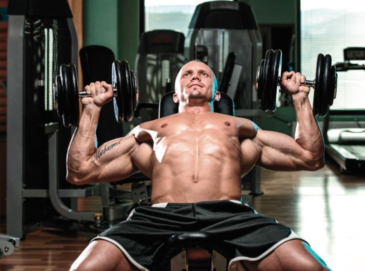
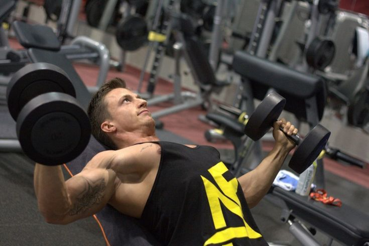

La constancia es la clave. Cada esfuerzo cuentaPecho y Tríceps
4 series de 6-8 repeticiones
Press de banca con barra
Recostado sobre un banco horizontal, los brazos estirados verticalmente, con la barra cargada en las manos, el movimiento consiste en bajar la barra hasta que toque el torso (fase excéntrica) y luego subir (fase concéntrica) hasta la posición inicial.

4 series de 8-10 repeticiones
Press inclinado con mancuernas
Baja las mancuernas de forma lenta y controlada hacia los lados hasta que estén más o menos en línea con los hombros. Levanta de nuevo las mancuernas hacia la posición inicial, cerrando los brazos y apretando los músculos del pecho al máximo.

3 series de 10 repeticiones
Aperturas con mancuernas
Acuéstate en el banco con las mancuernas cerca del pecho. Extiende los brazos para levantar las mancuernas sobre tu pecho. Desde ahí, baja los brazos en cruz con los codos ligeramente flexionados hasta sentir un estiramiento en el pecho.
3 series de 8-10 repeticiones
Fondos en paralelas
Inhala y flexiona los codos para bajar el pecho hasta el nivel de las barras, manteniendo piernas y torso inmóviles. Exhala y vuelve a la posición inicial extendiendo los brazos.
3 series de 10-12 repeticiones
Extensiones de tríceps en polea
Extiende las piernas hacia delante apoyando únicamente los talones en el suelo. Empuja hacia arriba con las manos para extender los brazos y elevar tu cuerpo hacia la posición inicial. Mantén los codos lo más cerca del cuerpo posible y aprieta los tríceps.
Recuerda realizar descansos de 60 a 90 segundos entre cada serie